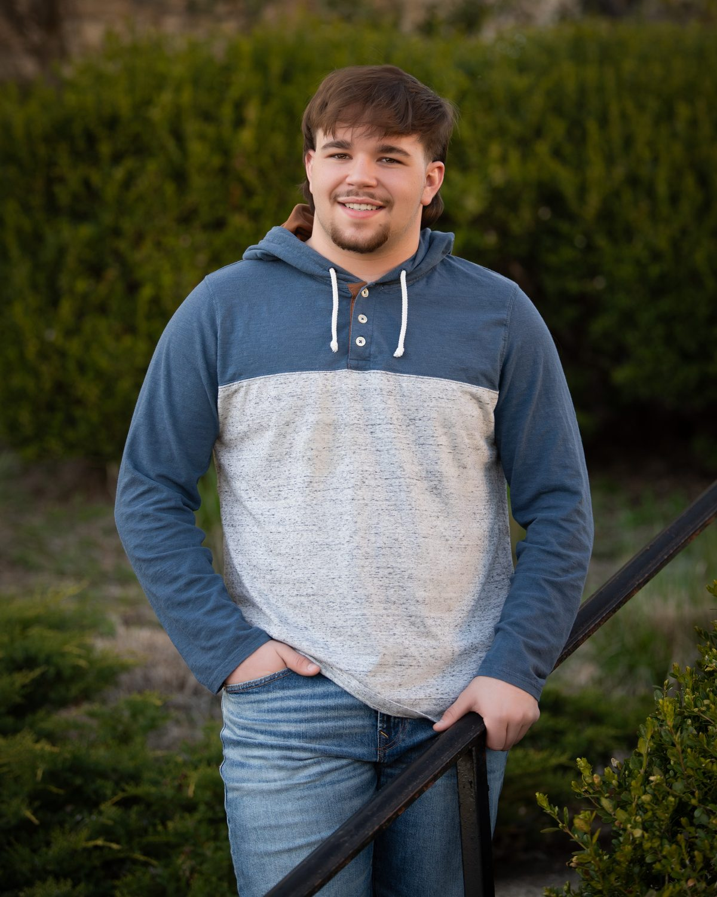
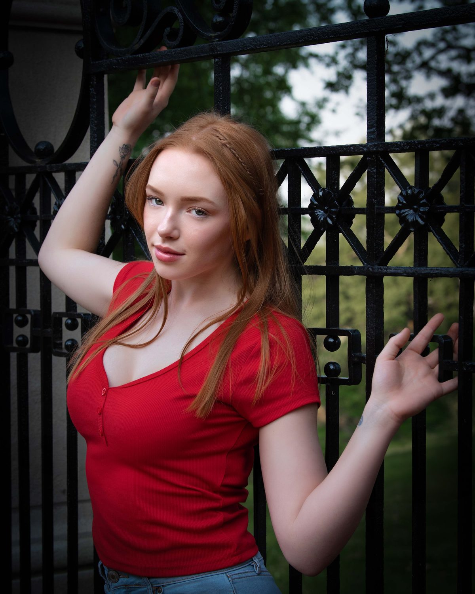
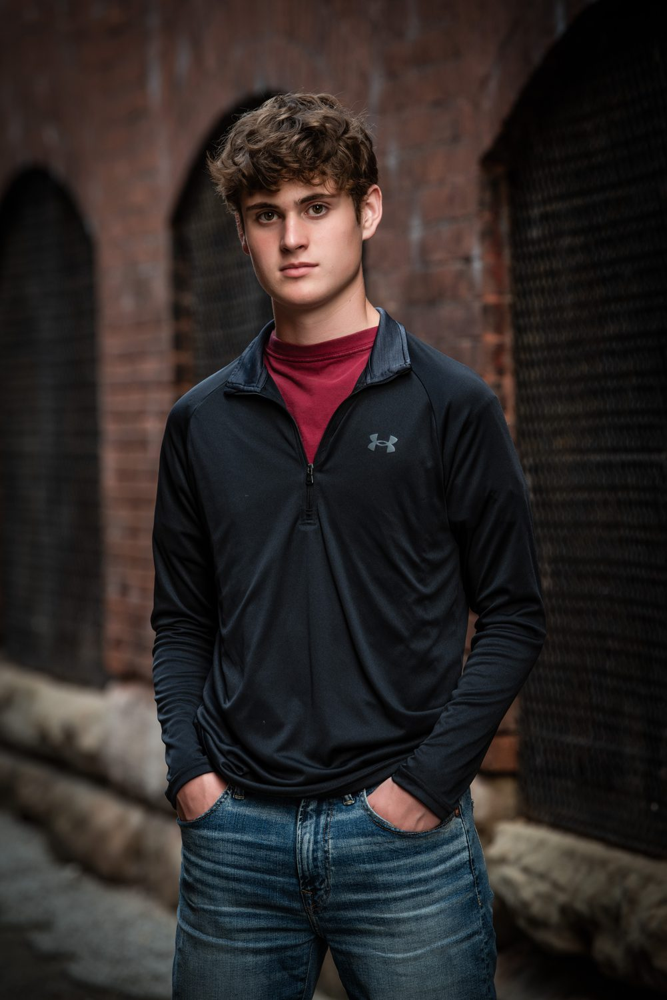

Senior Portraits in Bellaire, Ohio
The year everything changes
A senior portrait experience and finished artwork worthy of the milestone.

Made to hang where you’ll walk past it every day.
Senior year deserves more than a quick photo. It deserves artwork that looks like who they are becoming.

Directed with confidence
Your senior is guided from start to finish, posed and directed with the ease that comes from photographing thousands of people. Settings and styling are chosen to reflect who they are, and the experience is personal and unhurried. The artwork is finished to a standard the moment deserves.
See the ExperienceWho It Is For
Seniors and senior parents across the Ohio Valley, Bellaire, St. Clairsville, Wheeling, Belmont County, the Ohio Valley, Eastern Ohio, Northern West Virginia, and Western Pennsylvania including the Pittsburgh area.
A Note for Parents
You spent eighteen years getting here. This is artwork for your walls too. Many parents commission a wall piece of their senior to mark the year before everything changes.
The Result
Wall art, albums, and graduation pieces created to honor the year, not disappear into a phone.
Seniors of the Ohio Valley



Four steps, fully guided
Planning
A planning conversation with your senior and with you. We choose settings and styling that reflect who they are, in the studio, around Bellaire, or wherever fits them.
Styling
We plan outfits and the details that are theirs, the jersey, the instrument, the truck, the dog, so the portraits look like your senior and still look right on the wall years from now.
The Session
Posed and directed from start to finish with the ease that comes from photographing thousands of people. Personal, unhurried, and never a rush to the next client.
Design & Artwork
You return to view the portraits at true scale and design wall pieces, albums, and graduation pieces together. Finished artwork is collected in person at the studio.
Senior portrait investment
Your senior’s session is always free. A $299 retainer holds your date and is credited in full toward your artwork. Commissions begin at $950, and you build your own collection with no set packages.
As your collection grows, pieces are included: a Companion Set at $1,500, a Fine Art Album at $3,000, and your complete digital collection at $5,000.
Senior portrait questions
Late summer through October is the ideal window in the Ohio Valley. The light is better and your senior is not yet buried under applications and a full calendar.
In the Bellaire, Ohio studio or on location, from the family farm to a place that means something to your senior. We plan the setting together before the session.
We plan wardrobe with every senior before the session. Bring the outfits that feel most like them, and our What to Wear guide covers the details that photograph well.
Yes. We photograph seniors across the Ohio Valley, Belmont County, St. Clairsville, Wheeling, and Northern West Virginia.
Yes. Your school will take its yearbook headshot. This is a guided portrait experience that ends in finished artwork for your home, designed to be the portrait you still want on the wall in ten years.
Mark the moment on the wall
Tell us about your senior and we will design an experience worthy of the year.